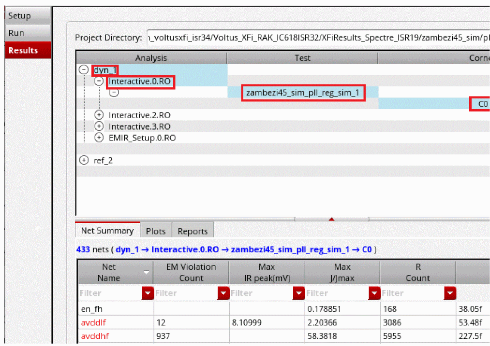
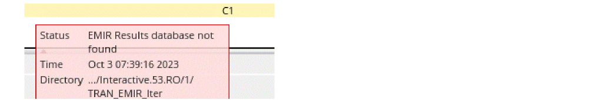
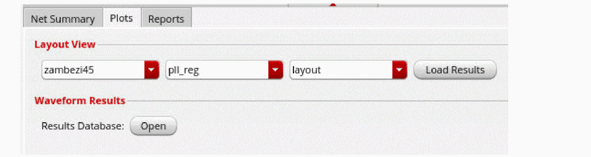
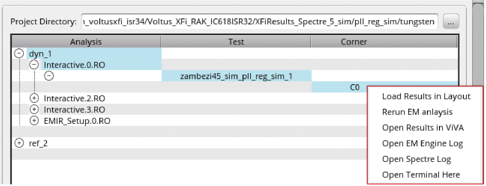
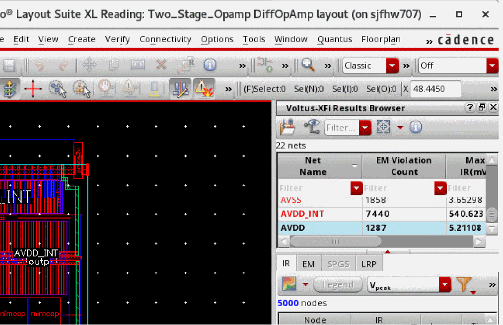

4
Viewing EM-IR Analysis Results
There are two ways of launching Voltus-XFi Results Browser to view EM-IR analysis results:
To view the EM-IR analysis results using the Voltus-XFi window, do the following:
- On the Voltus-XFi window, choose Results from the task pane.
-
Select an analysis, the test, and the corner for which you want to view the results.
The Net Summary tab gives a summary of the IR and EM results for each net. This tab allows you to view the violations in the Results page before loading the Results Browser assistant. This tab displays only those IR/EM columns for which the analysis is done. For example, the column name Max IR avg will be shown only if the average IR drop analysis was enabled in the simulation run. To display or hide a column, right-click on the column header and select the column name.
The nets with EM violations/high IR drop values are displayed in red font.The following color codes for corner names indicate the status of the simulation run:- a red-highlighted corner name indicates that the run has failed. The tooltip displays the status as “simulation failed”, timestamp, and the path to the history directory.
- a yellow-highlighted corner name indicates that the simulation run is complete but the EM-IR results are not generated. The tooltip displays the status as “EMIR Results database is not found”, timestamp, and the path to the history directory.
- a green-highlighted corner name indicates that the simulation run has passed. The tooltip displays the status as “simulation passed”, timestamp, and the path to the history directory.
The following is an example of a yellow-highlighted corner name:
 -
Select the Plots tab to view the violations in the layout.
 - In the Layout View section, select the layout, cell, and view from the respective drop-down lists.
-
Click Load Results.
The Virtuoso Layout window opens in another tab, with the high-level design summary displayed in Results Browser.You can right-click a corner name to access a shortcut menu of some of the common tasks that can be performed, such as open a terminal from within the Voltus-XFi interface, load analysis results on Virtuoso layout, and view the current and voltage waveforms in VIVA waveform viewer. The Load Results in Layout option in the shortcut menu will be grayed out if the corner name is yellow-highlighted indicating that result loading is disabled because the EM-IR results database is not found.
To view the EM-IR analysis results using Virtuoso Layout, do the following:
-
On the Virtuoso Layout window, choose Window – Assistants – Voltus-XFi Results Browser.
The Voltus-XFi Results Browser assistant is added as a docked assistant pane within the current layout window.
 - Click the Load EMIR results ( ) icon and load the EM-IR results database.
Related Topics
- The Voltus-XFi Results Browser Graphical User Interface
- Visualizing EM-IR Analysis Results using Voltus-XFi Results Browser
- Viewing EM-IR Analysis Reports
- Viewing Waveform Results
Return to top